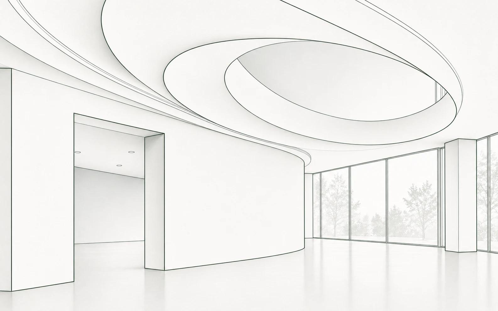
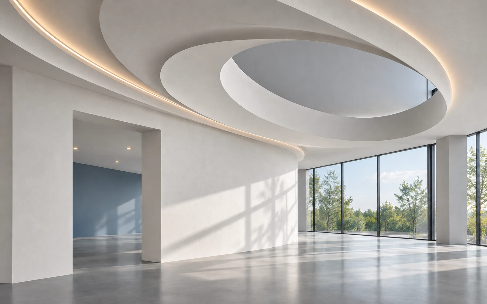
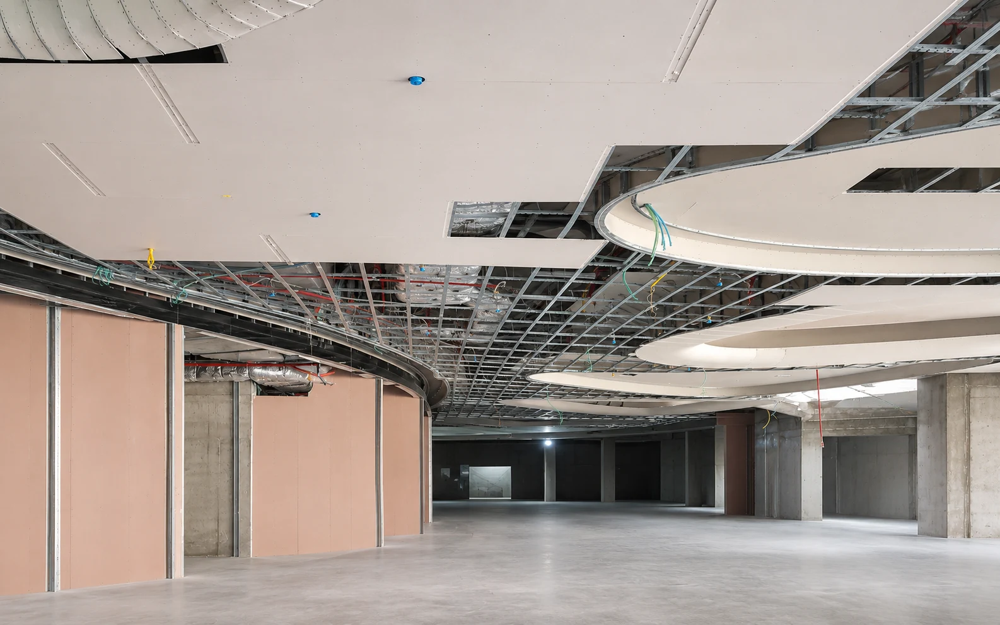

Складний об’єкт. Наш обсяг — наша відповідальність.
Виконуємо гіпсокартонні стелі, перегородки та оздоблення комерційних об’єктів. Узгоджуємо обсяг за вашим проєктом і відповідаємо за його виконання.
Що можемо виконати

Визначаємо
наш обсяг.
Стелі, перегородки, оздоблення.
Кожна зона — конкретна частина проєкту.
Ілюстративні фрагменти. Вибір розкриває відповідну поверхню.
Що виконуємо
Як рухається робота
Що потрібно узгодити
За поверхнею —
досвід роботи.
Криволінійні площини, каркас, складні примикання — у матеріалах досвіду керівника WWM.
Ізраїль, 2014–2019.
Особистий досвід до заснування WWM.

Досвід має
джерело.
Візуалізація вище пояснює конструкцію. Архівні кадри поруч показують роботу, на якій ґрунтується цей досвід.
WWM виконує гіпсокартонні конструкції та оздоблення комерційних об’єктів. В основі підходу — досвід керівника у виконанні внутрішніх конструкцій.
Як починаємо співпрацюЗосередьтеся на проєкті.
Організація наших робіт — на нас.
Почнемо з вашої задачі.
Місце об’єкта, креслення й перелік потрібних робіт допомагають визначити, яку частину проєкту ви доручаєте WWM.
- Де розташований об’єкт
- Що потрібно виконати
- Які матеріали проєкту вже є
Поговорімо
про ваш об’єкт.
Якщо маєте креслення — почнемо з них.
Познань, Польща